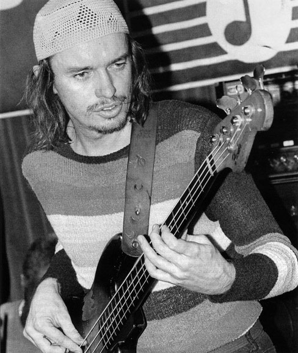
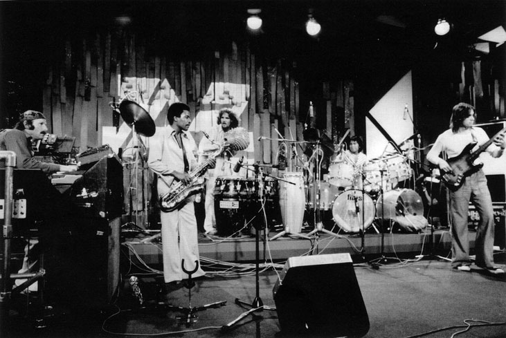
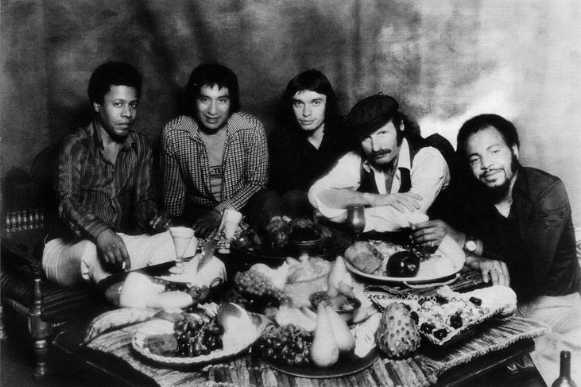
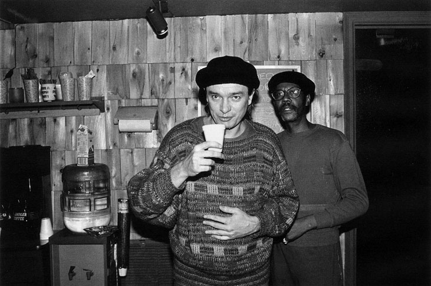
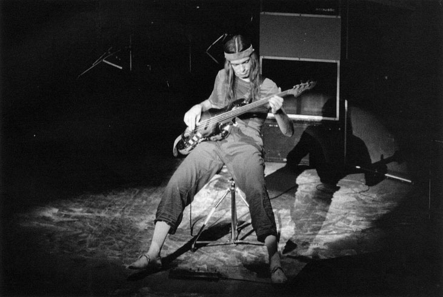

Джако Пасториъс
Джако Пасториъс
Казвам се Джон Франсис Пасториъс Трети и съм най-великият басист на света! - заявява един двадесетина годишен младеж. Той е клъощав, прилича на хипи, набутва се при Джо Завинул след негов концерт. „Разкарай се!" - отсича австрийският виртуоз. Но момчето е упорито и успява да му пъхне в ръцете демокасета със свои записи. За подобни странни срещи разказват и други големи имена от нюйоркската джаз сцена: китаристът Джон Абъркомби, барабанистите Тони Уилиямс и Джак Де Жонет, Кийт Джарет. В средата на 70-те на гребена на вълната са „децата" от Дейвис диаспората: Mahavishnu Orchestra на Джон Маклафлин, Weather Report на Джо Забинул и Уейн Шортър, Return to Forever на Чик Къриа, Неad Hunters на Хърби Хенкок, Lifetime на Томи Уилиямс, а самият Майлс, затънал в дрога и лични проблеми, заглушава тромпета си за пет години. По същото време търсенето на нова джаз-рок продукция нараства неимоверно. Барабанистът на Вlood, Sweat and Tears Боби Къломби е поканен от шефовете на Епик Рекърдс да направи дебют като продуцент. Очакванията са за някакъв поп-фънк проект, нещо много комерсиално по това време. Той обаче представя един никому неизвестен електрически басист. Музиката, която чуват хората от Епик, бързо ги убеждава да рискуват. Това е абсолютно нов подход към инструмента. От строго поддържащ, той е еманципиран в солиращ. Музиката на Джако Пасториъс е гръмка новина за гладния фюжьн пазар. Това е първият му албум – Jасо Pastorius. През 1976.
Джон Франсис Пасториъс, известен като Джако, е роден през 1951 в Нористаун, Пенсилвания. Родителите му обаче се преместват в Оукланд парк, съвсем близо до форт Лодърдейл, Флорида. Безкрайни бели плажове и мангови горички. Космополитен район, смесица на раси и музикални стилове, които малкият Джако попива. Майка му Стефани е от скандинавски произход, строга католичка. Бащата Джек е симпатичен хулиган, алкохолик, имитатор на Синатра, тип „душата на компанията". Тази странна двойка по-късно се развежда. Събитие, което бележи живота на Джако. Цялото

Джако Пасториъс в Blue Note. Ню Йорк, 18 февруари 1984
семейство е много музикално и поощрява тримата си синове в тази посока. Джако е хиперенергично и амбициозно дете, стремящо се да бъде първенец във всичко. „От сега забелязвам, че няма да ми е лесно да бъда това, което съм" - записва в дневника си. Започва с барабани, но при инцидент на футболното игрище чупи тежко китката си и бързо се преориентира към баса. Това се оказва точният избор. За кратко време той става много търсен в любителските джаз формации из цяла Флорида. Изтръгва прагчетата на фендера си, китосва грифа и така сам си произвежда фретлес бас. С пъргавите си пръсти и абсолютен музикален слух той се отправя към меката на нобия джаз - Ню Йорк. Там, след като е пратен по дяволите от Джо Завинул, Джако записва с пианиста Пол Блей. Свири и в дебютния албум на Пат Матини. И когато старият басист на Weather Report Алфонсо Джонсьн напуска, Джо Завинул се сеща за „оня пич". Прословут е случаят, в който, чувайки Джаковите записи, Джо му звъни по телефона и го пита: Хей, момче, свириш ли на електрически бас?... Звукът на Джако е толкова мек и мелодичен, че прилича на акустичен бас. Така през 1976 Джако получава заветното си назначение в Weather Report. Следват множество платинени плочи, мултимедийни концерти и световна известност. Най-добрата фюжьн група на 70-те. Самият Завинул споделя: „До появата на Джако ние бяхме известни само в колежите." Освен мощта на неговото виртуозно свирене Джако е роден шоумен. Той става фолклорен герой за младите хора. Негов коронен номер са плонжовете на предварително поръсената с бебешка пудра сцена ала Джеймс Браун, последвани от акробатични скокове и жонглиране с китарата, без това да се отразява на качеството на музиката. Голямото му вдъхновение обаче е Джими Хендрикс: „Аз и Хендрикс построихме с голи ръце кулите на Световния търговски център." Във всеки концерт на групата има един магнетичен момент.

Weather Report с Джако Пасториъс на джаз фестивала в Монтрьо, 8 юли 1976
Джако излиза сам на полутъмната сцена, включва усилвателите на максимум и буквално забива химна на Америка, почит кьм чернокожия си идол. Следващите шест години са изключително ползотворни за Weather Report. Между 40-годишния Завинул и младежа Пасториъс има особена духовна връзва - понякога по оста баща-син, друг път като инфантилна надпревара кой кого ще надпие. Факт е, че този тандем създава изключителни пиеси. Но това е и много изтощителен период с безкрайни турнета и изкушения далеч от дома. Постепенно славата съсипва Джако. Той започва да злоупотребява с водка, кокаин и жени. По това време се появяват първите признаци на отегчението и психическото разстройство. Мери, първородната дъщеря на Пасториъс, разказва: „Тогава бях едва на 12, всичко, което знаех, е, че татко не е татко повече. Този нов Джако беше странен, безотговорен, ненавременен и с особен поглед в очите."
Биографът и близък негов приятел Бил Милковски с болка разказва, че бидейки краен във всичко, Джако е особено постоянен в самоунищожението си. След няколко поредни избора на списание Down Beat за басист номер едно в света, множество колаборации с най-големите музиканти (Хърби Хенкок, Ал ди Меола, Джони Митчел, Джон Маклафлин, братята Брейкьр), след толкова пари и обожание той сякаш няма какво повече да постига. Става лесна плячка на наркодилърите, които го тъпчат с безплатна дрога. Джако започва да излиза от контрол и в личния си живот, и в кариерата си. Сякаш не може да издържи товара на славата. Следите от семейния живот се затриват напълно. „Спомням си, че ми режеше ноктите, почистваше ми ушите. Двамата гледахме Стар Трек, ходихме в Burger King. Вечер ми пожелаваше лека нощ" - тъжно споделя Мери. Всичко това вече не съществува. В пристъп на откровение Джако казва на свой приятел, че няма да доживее до 35.

Weather Report- Уейн Шортер, Алекс Акуна, Джако Пасториъс, Джо Завинул, Честър Томпсън, 1977
Ходи пиян на записи и концерти, където преднамерено свири фалшиво. Заяжда се с публиката и колегите. Китаристът Майк Стърн, близък негов приятел, казва: „По това време двамата с Джако бяхме абсолютно побъркани. Аз обаче се опитвах да спася живота си, а той не." В крайна сметка е уволнен от Weather Report. Удар, който го преследва до края на живота му. Новият му проект се казва Word of Mouth, мобилна формация варираща от биг-бенд до трио с чудесни музиканти. Има огромен успех. Но Пасториъс като че ли сам пада от върха. Свличането е методично и жестоко. Бог внезапно решава да си прибере всичко, което е вложил в живота на един гений. „Аз съм пънк от Флорида, дете на улицата. Там, където съм израсъл, думата пънк означава нещо като уличен мъдрец" - казва самият Джако. В края на огромната си слава Пасториъс се търкаля в канавката. Барабанистът Рики Себастиян разказва: „Веднъж видях Джако да лежи на тротоара. Викнах му: какво правиш, ставай от тук, а той отговори: Не, приятелю, всичко свьрши. Никога няма да мога да надхвърля себе си. Живея от това, което съм направил по-рано. Напълно разбрах какво ми казва. Представяте ли си какво го е убивало?! Славата. За славата мечтаеш толкова дълго, работиш толкова много, за да я постигнеш. И накрая - ужас! Тя се стоварва върху теб. Всички говорят за теб, получаваш всичко. Но за да понесеш тази тежест, трябва да си адски силен. Какво ли е преживял Джако, след като внезапно е станал прочут, бил е изненадан, не е можел да остане същият..." В началото на 80-те Джако Пасториъс е нарочен за персона нон грата не само от звукозаписните студиа, но и от големите джаз клубове. Той трябва да се задоволи със спорадични участия по периферията, кьдето продължава да шокира публиката. Това, че не получава заслуженото внимание, го изпълва с гняв. Пие до смърт, което влошава свиренето му.

Джако, 12 януари 1985. Две години преди да бъде убит, Джако Пасториъс страда от сериозни проблеми с наркотиците
Кръгът се затваря, змията е захапала опашката си. Изхвърлен от дома, Джако живее на баскетболното игрище. Спи по пейките, краде на дребно. Разпознават го да свири по улиците, просейки някой долар, бързо втечнен с приятели скитници. Боби Къломби, човекът, който продуцира първия му албум, обяснява драмата така: „Някои хора искаха да му помогнат, но в психиката на Джако вътре имаше нещо, което не му даваше да бъде щастлив." В моменти на просветление Пасториъс схваща добре, че повтаря трагичната съдби на Чарли Паркър, който още приживе, имитиран от другите саксофонисти, остава без работа и умира в нищета. Животът на Джако се превръща в постоянна болка по децата му и златните години. Негов приятел разказва, че го е следвал из града и се е налагало да го спасява многократно от сбивания, които Джако нарочно предизвиква, разбира се, с най-яко сложените типове. Пиянските му изцепки са любими клюки на нюйоркската бохема. Той тича гол, боядисан като индиански вожд. Дриблира с баскетболна топка по време на концерти. Или спи върху влаковите релси! Новият му прякор е Wacko (Лудия). Налага се да постъпи в клиниката Веllevue с диагноза маниакална депресия. Приятелят му Ейлин Робинсън разказва: „Понякога се обаждаше от болницата през нощта и ми казваше: Отвратително свириш! Беше взел със себе си много стари записи и ми ги пускаше по телефона. Отчаяно се опитваше да си върне нещо, искаше да говорим за миналото." За кратко Джако се закрепя, но самоунищожителният нагон отново го завлича надолу. Изоставен от „големите" имена, той работи с изключителни млади музиканти като френския виртуоз Вирели Лагрен, китариста Хайрам Бълок, барабанистите Кенууд Денард и Браян Мелбин. Не спира до последно да мечтае за нов проект само от струнни инструменти. Всички мостове обаче са изгорени и фаталният изход не закъснява. На 11 септември 1987 по молба на бившата си приятелка намира билети за концерт на Карлос Сантана. За нея и новото й гадже. Същата вечер си пробива път през охраната, скача на сцената и с боксов маниер иронично вдига ръката на Алфонсо Джонсьн, басистът, чието място в Weather Report е заел преди десет години. През нощта при опит да влезе в друг клуб – Midnight Club, Джако попада на бодигард, специалист по източни бойни изкуства. Намират трупа на Джако призори в локва кръв със счупен череп и разкьсано дясно око извън очната кухина. Пасториъс е на 36 години. „Сигурна съм, че баща ми е бил сметнат от убиеца си за безделник.

Джако, 1970
Вероятно не е разбрал, че убива брилянтен чобек. Но няма абсолютно никакво оправдание за жестокостта, с която беше убит баща ми" - казва Мери. Целият инцидент остава обвит в мъгла за това какво точно се е случило. След едноседмична кома и със съгласието на близките му лекарите изключват животоподдържащите апарати. Бродягата от плажовете на Флорида, както сам себе си нарича Джако, напуска този свят, след като внезапно е постигнал всичко и после го е загубил наведнъж. Бодигардът убиец, 25-годишен военен курсант, е обвинен в предумишлено убийство, но след признаване на вината лежи ефективно само няколко месеца.
Пат Матини е убеден, че Джако е попаднал в уловката на собствения си имидж на много лошото момче в джаза. Той изпитва удоволствие да демонстрира скандала около себе си. За определен момент Джако е най-крупната фигура на шоубизнеса. Предизвиква ярко впечатление. Но там, където свършва една легенда, започва трагедията. Самият Пасториъс казва: „Аз не съм звезда. Никога няма да бъда Франк Синатра, Рей Чарлз или Елвис Пресли. Аз даже не съм и Джако." Днес, след двадесет години, музиката на Пасториъс продължава да бъде слушана и копирана по цял свят. За басистите той е едновременно и азбучен, и ироничен. Бляскав, своенравен, творчески прекаляващ виртуоз. „За мен съществуват баскитарата до Джако и баскитарата след Джако" - казва барабанистът Ейлин Робинсън. Случайно или не, финалната пиеса от последния албум на Майлс Дейвис Amandla се казва Мr. Pastorius.